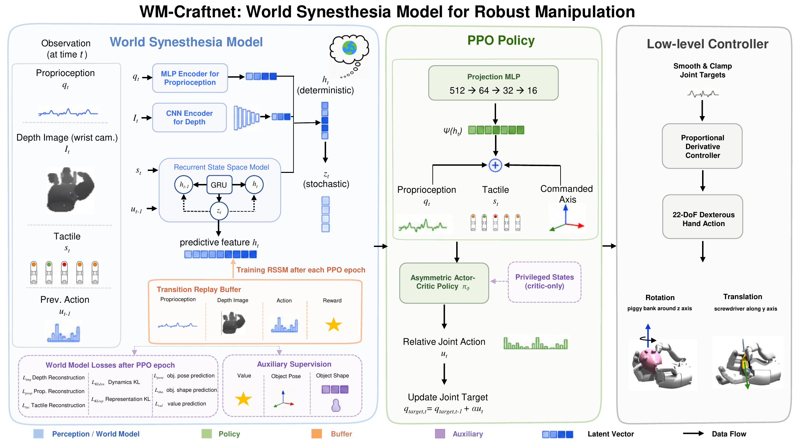
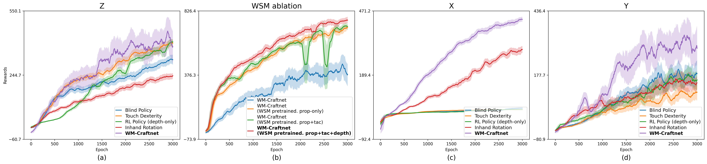
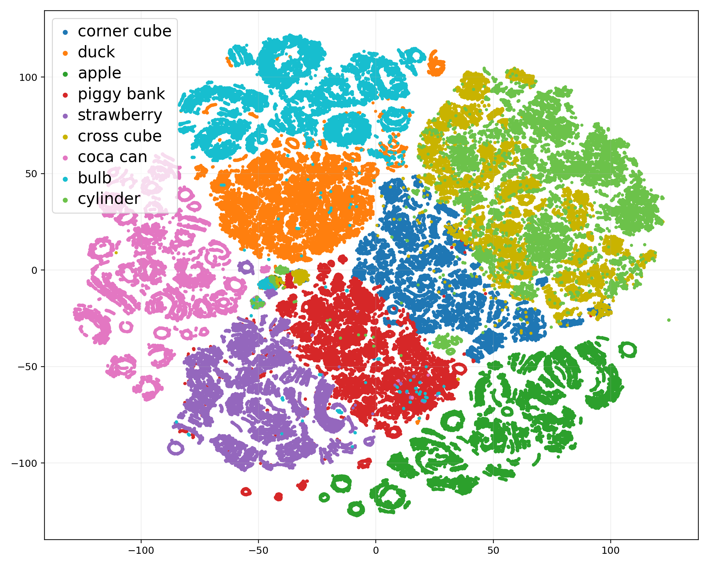
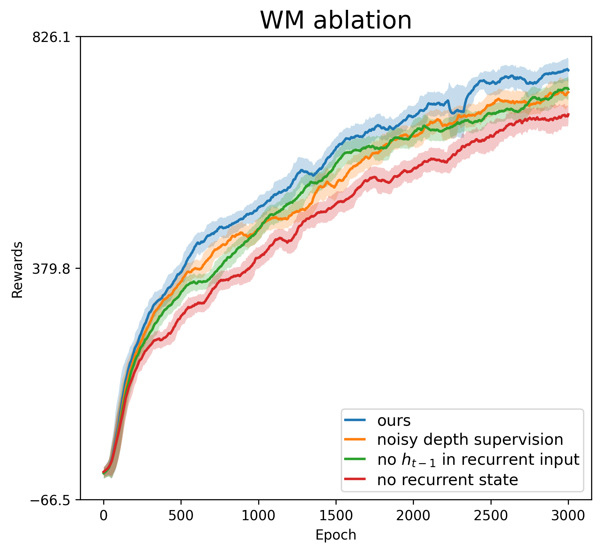

World Synesthesia Model for Visuotactile Dexterity
An action-conditioned recurrent state that turns depth, touch, proprioception, and control history into a reusable prior for perturbation-robust, object-ID-free in-hand manipulation.
WM-Craftnet learns a Dreamer-style World Synesthesia Model from proprioception, wrist depth, tactile signals, actions, and rewards, then exposes its deterministic recurrent feature to a PPO actor. Rather than optimizing through imagined rollouts, the world model acts as a deployable visuotactile state estimator, helping one policy infer object geometry, contact evolution, drift, and slip under pose shifts, disturbances, unseen objects, different rotation axes, and tool-use-style translation.

These compact ablations isolate the mechanism behind WM-Craftnet: the performance gain comes from clean geometric supervision coupled with action-conditioned recurrent inference, not from simply adding raw depth, tactile inputs, or a per-frame learned feature. More detailed rollout and recovery videos are presented in the real-world, multi-axis, and robustness sections below.
Full WSM with prop+tac+clean-depth heads improves over raw-sensor baselines and scratch training.
Clean-depth WSM beats noisy-depth supervision, showing that denoising is a task-relevant target.
On duck rotation, WM-Craftnet outperforms IHR even when IHR receives WSM-denoised depth.
t-SNE shows recurrent states organize interaction regimes without object identifiers.
| Method | Return ↑ | EpLen ↑ | RotR ↑ | Fall ↓ |
|---|---|---|---|---|
| Best raw-sensor baseline | 386.9 | 362.5 | 1.018 | 0.047 |
| WM-Craftnet from scratch | 414.3 | 264.2 | 0.742 | 0.002 |
| WSM pretrained, prop-only | 684.5 | 424.0 | 1.191 | 0.009 |
| WSM pretrained, prop+tac | 698.9 | 435.4 | 1.192 | 0.004 |
| WSM pretrained, prop+tac+depth | 753.3 | 435.2 | 1.293 | 0.005 |
Conclusion. The full predictive state is not just a larger observation vector: pretraining and clean-depth supervision give the actor a reusable, denoised interaction state for rotation.


Conclusion. The recurrent WSM state is not a generic visual embedding; it separates and blends interaction histories according to geometry/contact regimes that matter for control.
| WSM Variant | EpLen ↑ | Return ↑ | RotR ↑ | OffAxis ↓ | AngVar ↓ |
|---|---|---|---|---|---|
| Noisy-depth supervision | 431.1 | 708.0 | 1.265 | 1.299 | 1.456 |
| No previous h recurrent input | 434.3 | 705.4 | 1.282 | 1.125 | 1.185 |
| Encoder-decoder z policy | 417.4 | 667.6 | 1.254 | 1.323 | 1.343 |
| Full WSM | 435.2 | 753.3 | 1.293 | 1.225 | 1.324 |

Conclusion. A per-frame latent feature is insufficient; the best control performance comes from combining clean geometric targets with action-conditioned recurrent memory.
| Method | Duck RR/SR | Cross RR/SR | Corner RR/SR | Unseen RR/SR |
|---|---|---|---|---|
| In-Hand Rotation | 1.83 / 5/10 | 0.45 / 1/10 | 0.36 / 1/10 | 0.39 / 0/10 |
| IHR with WSM-denoised depth | 2.76 / 8/10 | 1.21 / 8/10 | 2.43 / 10/10 | 0.80 / 0/10 |
| WM-Craftnet | 16.18 / 10/10 | 8.01 / 10/10 | 8.48 / 10/10 | 4.32 / 8/10 |
Conclusion. Cleaner depth substantially improves IHR, but WM-Craftnet remains far ahead because its WSM state also carries temporal contact and motion information needed for closed-loop adjustment.
Conclusion. The pretrained WSM serves as reusable physical structure: after 3000 epochs, the downstream 49-object policy reaches 9.37 ± 0.13 rad per episode versus 3.28 rad without the prior, while the fall rate drops from 6% to 0.3%. The video shows the resulting broad object coverage.
To visualize what the World Synesthesia Model learns, we reconstruct wrist-camera depth from the WSM latent state during duck z-axis rotation rollouts. Although the model receives a noisy depth input, the reconstructed predicted depth suppresses sensor noise and preserves hand-object geometry in both real and simulated rollouts, supporting the role of WSM as a deployable visuotactile state estimator.
Real Noisy Wrist Depth
Real Predicted Depth from WSM Latent
On real hardware, the wrist depth stream is noisy and incomplete. The WSM latent reconstructs a cleaner depth representation that preserves the hand-object geometry.
Third-Person RGB: duck z-axis rotation
Ground-Truth Wrist Depth
Noisy Depth Input to WSM
Predicted Depth from WSM Latent
The WSM latent reconstructs a clean wrist-depth stream from noisy observations. Compared with the noisy input, the predicted depth preserves the duck and hand-object workspace while removing substantial sensor noise, showing that the recurrent latent captures task-relevant geometry for downstream control.
WM-Craftnet evaluates whether one closed-loop policy can rotate objects with different size, shape, mass, curvature, and contact geometry without object identifiers or an object-specific finger gait.
On the real Sharpa platform, WM-Craftnet is deployed with wrist depth sensing and tactile feedback under real sensing noise, latency, and unmodeled contacts. The real-hardware rollouts below show that one policy can adapt across objects in a continuous run, recover from out-of-distribution hand-object states, and sustain z-axis rotation on objects with different shapes and contact geometry.
Continuous multi-object real-world rollout. The same policy rotates several objects in one uninterrupted run: 0-24 s duck, 24-35 s cylinder, 35-50 s cross block, 50-73 s steamed bun, and 73-94 s an unseen double-notched block. In the unseen-object segment, the policy initially struggles, adapts online through closed-loop sensing, and gradually reaches stable rotation.
OOD-to-duck recovery. An unseen object first drives the policy into an out-of-distribution interaction state. After switching to the duck, WM-Craftnet recovers a controllable grasp and resumes successful z-axis rotation on the physical hand.
Challenging-start recovery. At 0 s, the switch starts in a side-fall state; the policy recovers from the challenging initial pose and brings the object back into a controllable rotation mode.
Bucket palm-region recovery. During bucket rotation, at 6 s the object pops into the palm region; WM-Craftnet pushes it back toward the comfortable workspace and continues stable rotation.
Duck. WM-Craftnet keeps stable finger contacts while rotating a curved, asymmetric object.
Corner block. WM-Craftnet maintains stable z-axis rotation for over one minute without side-fall.
Cross block. Closed-loop visuotactile feedback supports rotation with protruding arms and changing contact patches.
Cylinder. The hand produces smooth z-axis spin on a rounded object with limited tactile landmarks.
Piggy bank. WM-Craftnet preserves controllable rotation on an anisotropic everyday object with direction-dependent contact geometry.
Strawberry. The policy maintains rotation on an anisotropic tapered object whose irregular profile creates shifting contact patches.
Fire hydrant. WM-Craftnet handles protruding side structures and changing contact geometry while sustaining z-axis rotation.
Blue block. The policy keeps the block upright and achieves stable continuous rotation for more than six full turns.
Bulb. Despite an unstable center of mass, closed-loop sensing lets the policy adjust contacts and recover balanced rotation.
The replayed gait has no feedback or adjustment ability; even with the block near the palm center, it cannot recover a controllable rotation mode.
The tactile policy can produce rotation, but without explicit geometry the object becomes unstable and frequently tips into side-fall states.
Real sensor noise quickly pushes the depth observation out of the simulated training distribution, causing an OOD interaction state and loss of stable rotation.
WSM-reconstructed depth gives a cleaner geometry estimate and slightly improves behavior, but depth denoising alone cannot sustain stable rotation.
With WSM recurrent task context, the policy keeps the corner block upright and maintains stable continuous z-axis rotation for over one minute.
In simulation, initial object positions are uniformly perturbed within an 18 cm2 feasible reset region. The main z-axis benchmark rotates nine everyday objects: corner block, duck, apple, piggy bank, strawberry, cross block, coca can, bulb, and double-notched cylinder.
Corner block
Duck
Apple
Piggy Bank
Strawberry
Cross block
Coca Can
Bulb
Double-notched Cylinder
For gravity-invariant rotation, we adapt WM-Craftnet with a closer hand-object grasp inspired by the HORA implementation, together with modified initial conditions and reward design. This compact grasp keeps the object more securely inside the hand, so the policy can maintain contact and stable rotation when gravity acts under different palm orientations.
Compact-grasp rotation. A single policy rotates a duck, a strawberry, and a cylinder using the closer hand posture.
Successful sim-to-real transfer. The object remains grasped and keeps rotating as palm orientation changes under gravity.
Beyond the z-axis benchmark, WM-Craftnet is trained and evaluated for axis-specific rotation around x and y. Both settings use the same 18 cm2 randomized initial-position protocol to test whether the representation remains effective under different commanded rotation goals.
These axes are not just alternative target directions; they create harder contact-rich motion modes. The z-axis setting is comparatively stable because gravity helps keep the object seated in the palm while the fingers accumulate spin around the vertical direction. In contrast, y-axis rotation often involves elongated or tool-like objects rotating around a shorter object direction, not along the long body axis. This puts mass and contact points farther from the commanded axis, requiring control of larger moment arms, asymmetric contact patches, and sideward torques. The x-axis setting is even more challenging because rotation relies on rolling and fingertip-contact reallocation, while gravity can drive the object out of the stable palm-supported region.
We first validate that the learned y-axis controller transfers from simulation to the real hand on elongated and edge-rich objects. These real-world rollouts highlight whether WM-Craftnet can preserve closed-loop target-axis rotation while coping with sensing noise, contact asymmetry, and tool-like geometries outside the simulator.
Toothpaste. The policy keeps an elongated object controllable while rotating around its shorter axis under asymmetric leverage.
Screwdriver. Closed-loop visuotactile feedback stabilizes a tool-like object and maintains y-axis rotation despite the handle-shaft geometry.
Corner block. WM-Craftnet sustains real-world y-axis rotation despite sharp edges, intermittent contacts, and changing sideward torques.
In simulation, we next evaluate both alternative rotation goals under the same randomized initialization protocol. We first present the broader y-axis benchmark and then the more contact-sensitive x-axis benchmark.
The y-axis object set contains toy trashcan, corner block, bulb, corner cylinder, toothpaste, coca can, screwdriver, flashlight, and bottle. This setting emphasizes whether the policy can maintain sustained target-axis rotation while rotating elongated bodies about a shorter axis and regulating the resulting moment arms and sideward contact torques.
Toy Trashcan
Corner block
Bulb
Corner Cylinder
Toothpaste
Coca Can
Screwdriver
Flashlight
Bottle
The x-axis rollouts below show four representative objects: block, corner block, stepped block, and lego brick. Here the target axis changes the required contact sequence, gravity interaction, and feasible finger-coordination pattern, making stable rotation harder than simply replaying a z-axis finger gait.
block
Corner block
Stepped block
Lego Brick
We evaluate out-of-distribution disturbances injected after the policy has already entered closed-loop manipulation. Even when a sudden external perturbation moves the object away from current trajectories, WM-Craftnet infers the changed hand-object state and adjusts back into a controllable configuration.
A policy trained on the nine z-axis objects is evaluated zero-shot on three unseen geometries. Even subtle shape changes raise the difficulty by altering local contact patches, leverage, and slip patterns; baseline methods fail to rotate all three unseen objects successfully.
These rollouts visualize the behavior that motivates WM-Craftnet's perturbation-robust design. Before maximizing target-axis rotation, the policy first uses visuotactile feedback and the learned recurrent state to re-center, regrasp, or upright the object into a more controllable hand-object configuration. This adjustment stage highlights the advantage of task-relevant object-state understanding over a fixed rotation gait.
From 0-10 s, the thumb adjusts the bottle closer to the fingers, moving it into a stronger contact region before the hand continues rotation around the y-axis.
From 0-5 s, the thumb, index finger, and middle finger coordinate to make the bulb closer to an upright pose, enabling smoother rotation around the z-axis.
From 0-5 s, all five fingers cooperate to bring the coke can upright, showing closed-loop recovery from a less favorable initial pose before z-axis rotation.
From 0-4 s, the thumb and little finger guide the object toward the palm-finger junction, a comfortable hand workspace where stable contacts can support subsequent z-axis rotation.
From 0-7 s, all five fingers coordinate to move the object from the palm onto the fingers, converting an unstable start into a fingertip-controlled configuration for z-axis rotation.
From 0-5 s, all five fingers adjust the piggy bank into a comfortable position, establishing stable contacts before continuing rotation around the z-axis.
Finally, we examine whether WM-Craftnet can support tool-use-style manipulation beyond benchmark object rotation. Using a screwdriver as an example, the policy must reason about the tool's elongated geometry and contact state while preserving a stable in-hand grasp. This setting includes both goal-conditioned translation, where the screwdriver is adjusted to a target pose, and fast axial rotation, where the hand spins the tool while maintaining control.
Goal-conditioned translation. The hand adjusts the screwdriver toward a target position while keeping stable contact along the handle.
Fast screwdriver rotation. The same tool-use setup demonstrates rapid in-hand rotation while preventing the tool from slipping out of the grasp.
The central failure case for dexterous in-hand rotation is an overfit, nearly open-loop finger gait. Policies trained on a narrow object set or fixed initial pose can rotate familiar objects, but small pose offsets, force disturbances, or object drift may push the interaction outside the trained distribution and lead to stuck states or drops.
WM-Craftnet addresses this by using a learned recurrent state to improve task-relevant inference over object pose, geometry, contact, and slip. However, the current quantitative evaluation is still focused on short-horizon in-hand rotation. Translation, tool-use-like behavior, grasp changes, and broader real-world sensing variation are evaluated qualitatively or left as future work.
The examples below separate Baseline failures from Ours failures on both real hardware and simulation. Baseline policies can quickly leave the observation distribution under noisy depth and fail to produce useful rotation actions. WM-Craftnet reduces these issues, but can still fail under especially challenging initial poses or long-horizon contact drift.
Noisy real depth rapidly drives the baseline out of distribution, preventing it from producing a coherent rotation strategy.
WM-Craftnet attempts to adjust from a difficult initial pose, but cannot recover a stable controllable configuration.
After completing 5 successful spins, the duck tips toward one side and the policy loses the stable contact mode needed to continue at 29s.
The bulb starts on the palm; during adjustment, the policy pushes it out of the hand and drops it.
The object rotates, but the hand uses an unnatural posture and the bulb drifts far from the intended rotation axis.
The baseline can induce rotation, but with an awkward finger gait and substantial off-axis object displacement.
During x-axis rotation of the notched block, contact becomes unstable and the object drops midway through the rollout.
The baseline struggles to keep a stable axis-aligned grasp, causing the block to drift and lose controllable rotation.
The flashlight enters a stuck contact state, preventing the policy from continuing useful in-hand rotation.
While rotating the toothpaste-like object, the policy fails to explore a useful contact mode and cannot complete rotation.
WM-Craftnet can still fail on difficult bulb manipulation when contact recovery is insufficient and the object falls.
@inproceedings{anonymous2026wmcraftnet,
author = {Anonymous Authors},
title = {WM-Craftnet: World Synesthesia Model for Robust and Generalizable Dexterous In-Hand Manipulation},
booktitle = {CoRL},
year = {2026},
}